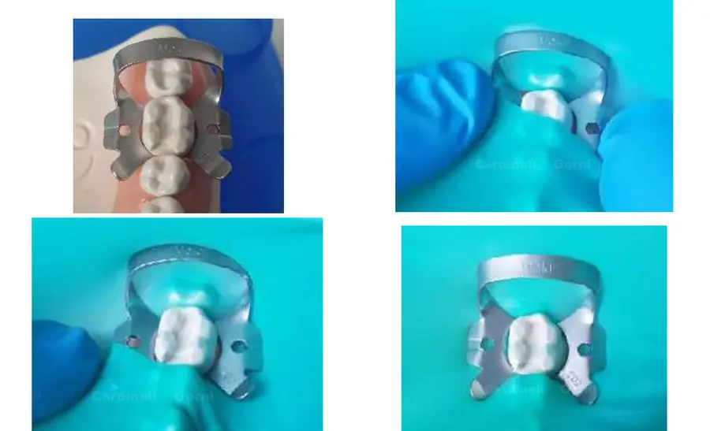
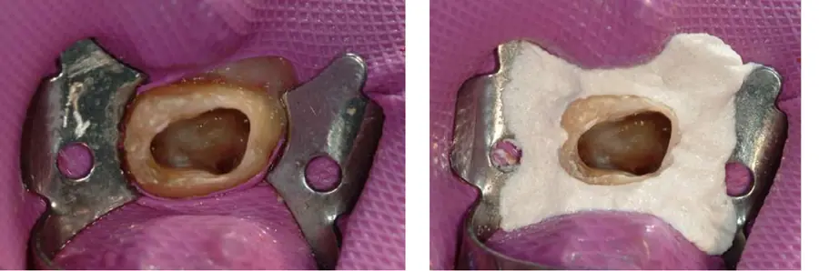

نسخه استخراجشده؛ ترجمه یا تأیید علمی انجام نشده است. وضعیت: captured
دانشجو برای ترمیم کلاس II مولر اول پایین، کلمپ W8A را روی دندان گذاشت، پایداریاش را آزمود و رفت تا ورق را از روی میز بردارد. استاد همان لحظه کارش را متوقف کرد. چه چیزی جا افتاده بود؟

در روش کلمپ اول، کلمپ را جدا روی دندان میگذاری و بعد ورق را از روی آن میکشی. دندان را هنگام کلمپ کردن کامل میبینی، پس فکهای کلمپ کمتر به لثه فشار میآورند.
این روش دودستی است و دستیار نمیخواهد. بزرگترین مزیتش دید عالی هنگام گذاشتن کلمپ است. پس از آزمون پایداری، کلمپ روی دندان میماند و تو ورق را با آرامش میآوری.

اشتباه رایج: فراموش کردن نخ ایمنی. در این روش کلمپ تنها در دهان است و هنگام کشیدن ورق بیشترین فشار را تحمل میکند؛ پس خطر بلعیدن یا رفتن آن به راه هوایی از همهی روشها بیشتر است. کلمپ باید کاملاً پایدار باشد و نخ ایمنی داشته باشد. کلمپ بدون نخ را هرگز در دهان رها نکن.
اگر کمان کلمپ روی مخاط راموس یا زایگوما فشار میآورد و ورق بهسختی از رویش رد میشود، روش پاراشوت راه بهتری است (درس ۴).